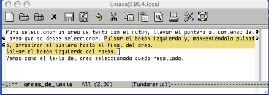
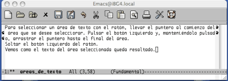
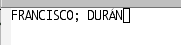
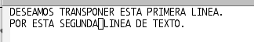

5.Rectificar.
Pág.Anterior | Índice | Pág.Siguente
En este capítulo, con el nombre de Rectificar, se tratarán diversas acciones que, frecuentemente, suelen utilizarse combinadas en los procesos de rectificación y recomposición del contenido que se está editando.
Se trata de las siguientes acciones:
- Desactivar Comandos
- Deshacer cambios
- Eliminar texto
- Areas (Regiones) de texto: Selección, Eliminación y Cópia
- Recuperar texto eliminado/copiado
- Mover texto
- Transposición de letras y palabras
- Cambios mayúsculas/minúsculas
- El modo de sobreescritura
Como se puede ver, se presenta un capítulo denso..... Intentaremos que sea leve.
5.1 Desactivar comandos
Pág.Anterior | Índice | Inicio Página | Pág.Siguente
Emacs nos ofrece una via para desactivar cualquier comando que se haya "iniciado" pero no ejecutado aún:
- Comando : C-g
Tras su ejecución, en el mini-buffer aparecerá el mensaje Quit, en lugar del comando que hemos desactivado.
Se ha ejecutado el comando de apertura de archivo C-x C-f. En el mini-buffer nos aparece el mensaje Find File:.
Si en cualquier momento, antes de ejecutar C-x C-f pulsando <Enter>, ejecutamos C-g , desactivaremos la apertura de archivos iniciada, apareciendo en el mini-buffer el mensaje Quit, y desplazándose el cursor a la zona de edición
Como podemos deducir, C-g no será de ninguna utilidad en comandos de "ejecución inmediata" , como , por ejemplo, C-x C-s.
También, dependiendo de lo que estemos haciendo, puede ser necesario ejecutar varias veces seguidas C-g.
5.2 Deshacer cambios
Pág.Anterior | Índice | Inicio Página | Pág.Siguente
Disponemos de dos comandos para deshacer los últimos cambios realizados:
- Comando : C-x u
- Opción de menú : Edit-->Undo
- Comando "largo" : M-x advertised-undo <Enter>
- Comando : C-_
- Opción de menú : Edit-->Undo
- Comando "largo : M-x undo <Enter>
No existe ninguna diferencia entre estos dos comandos.
En la barra de herramientas, el icono correspondiente a estos comandos es el señalado en la siguiente figura:
Ejecutando repetidamente cualquiera de estos dos comandos, se van deshaciendo los cambios realizados, de más reciente a más antiguo. Ambos comandos admiten modificadores numéricos [4.7], que actuarian como elementos de repetición del comando.
Una vez ejecutado el comando, en el mini-buffer aparece el mensaje : Undo!.
Existen otros dos comandos que merecen ser considerados:
- Comando : M-x revert-buffer <Enter> : Deshace los cambios realizados desde la última vez que se guardo (o se autoguardó) el archivo.
- Con la ejecución de este comando, Emacs sustituye el contenido actual del buffer por el contenido de su archivo asociado.
- Nótese que este comando sólo puede operar en buffers que tienen un archivo asociado. Al ejecutar el comando, aparecerá el siguiente mensaje en el mini-buffer: Revert buffer from file nombre_archivo_asociado? (yes or no); introduciendo yes se efectua la sustitución del contenido del buffer.
- Comando : C-x C-f archivo~ <Enter> C-x C-w archivo~ <Enter> : Cada vez que se guarda un archivo, Emacs crea un archivo de backup, que lleva el mismo nombre del archivo guardado, pero precedido por una "tilde" ~.
- Esta serie de comandos sirve para volver a la versión anterior del archivo que estamos editando.
- En primer lugar abrimos el archivo backup (archivo~, en nuestro ejemplo), para, porteriormente, guardarlo con el nombre del archivo que queremos sustituir, (archivo, en nuestro ejemplo)
- Emacs nos preguntará, mediante un mensaje en el mini-buffer: File text exist ; overwirte (y or n ) : . Tecleando: y, se llevará a cabo la sustitución del contenido de archivo por el de su backup, archivo~.
5.3 Eliminar y borrar texto
Pág.Anterior | Índice | Inicio Página | Pág.Siguente
En Emacs debemos distinguir entre eliminar y borrar texto.
La razón de la anterior distinción está en el hecho de que , tras su eliminación, el texto es "guardado" en el denominado kill ring, una especie de "almacén" interno en el que Emacs guarda todo lo que se ha eliminado o copiado, con el fin de que pueda ser porteriormente recuperado (pegado).
En cambio, el texto borrado no va a parar al citado kill ring, por lo que no podrá ser recuperado, aunque siempre podrá recurirse a los comandos de deshacer : C-x u y C-_.
Los principales comandos ( y teclas) para la eliminación y borrado de texto son:
- Comando : C-d :
- Tecla equivalente : <Supr>
- Comando "largo" : M-x delete-char <Enter>
- Borra el carácter sobre el que se encuentra el cursor. Este texto borrado no podrá ser recuperado.
- Comando : M-d :
- Comando "largo" : M-x kill-word <Enter>
- Elimina los caracteres comprendidos entre la posición del cursor y el final de la palabra.
- Para eliminar la palabra entera, el cursor debe situarse sobre el primer caracter de la misma.
- Tecla : <DelBack>
- Comando "largo" : M-x delete-backward-char <Enter>
- Borra el caracter anterior a la posición del cursor.
- Comando : M-< DelBack>
- Comando "largo" : M-x backward-kill-word <Enter>
- Elimina la palabra anterior a la que contiene el cursor.
- Comando : C-k
- Comando "largo" : M-x kill-line <Enter>
- Elimina desde la posición del cursor hasta el final de la linea.
- Comando : M-k
- Comando "largo" : M-x kill-sentence <Enter>
- Elimina desde la posición del cursor hasta el final de la frase.
- Comando : C-x <DelBack>
- Comando "largo" : M-x bacward-kill-sentence <Enter>
- Elimina desde la posición del cursor hasta el principio de la frase.
- Comando "largo" : M-x kill-paragraph <Enter>
- Elimina desde la posición del cursor hasta el final del párrafo siguiente.
- Comando "largo" : M-x backward-kill-paragraph <Enter>
- Elimina desde la posición del cursor hasta el final del párrafo anterior.
Estos comandos admiten modificador numérico [4.7].
En el caso de aplicarse éstos modificadores a los comandos de borrado, con lo que afectarian a más de un caracter, el texto borrado si pasaria al kill ring, pudiendo ser pòsteriormente recuperado.
Es interesante destacar el especial comportamiento de C-k:
- Cuando se encuentra al principio de la linea, borrará el contenido de la linea, no la linea en sí (. Observar que el indicador de número de linea no varía ). Tecleado una segunda vez, suprimirá la linea misma.
- Cuando se ejecuta en una linea vacia, la suprime.
- Cuando se ejecuta al final de una linea, elimina el salto de linea, uniendo ésta con la siguiente línea
- Ejecutado con un modificador numérico [4.7], C-u nº C-k, borra el contenido y suprime nº de lineas.
5.4 Areas (Regiones) de texto. Selección.
Pág.Anterior | Índice | Inicio Página | Pág.Siguente
Con bastante frecuencia, se necesitará actuar sobre determinados bloques de texto. Emacs nos ofrece un medio para seleccionar, ( marcar, en el lenguaje de Emacs ) áreas de texto ( denominadas regiones, en el lenguaje de Emacs ) para operar con ellas.
La selección de dichas áreas puede realizarse mediante el ratón o mediante comandos:
Selección mediante el ratón: Situar el puntero del ratón
al inicio del área del texto que se desea seleccionar. Pulsar el botón izquierdo del ratón y, manteniendolo presionado,
arrastrar el puntero hasta el final del área.
Soltar el botón.
El texto seleccionado quedará resaltado.
|  |
Para la Selección mediante comandos utilizaremos el comando:
Comando : C-<Space> o , también, C-@. Ambos son equivalentes.
Comando "largo" : M-x set-mark-command <Enter>
Para realizar la selección operaremos de la siguiente manera:
Colocaremos el cursor al inicio de la región que deseemos marcar.
Ejecutaremos el comando, C-<Space> o C-@.
Podemos observar como en el mini-buffer aparece el mensaje: Mark set. Nos indica que el marcado del comienzo del bloque.
Para finalizar el marcado de la región bastará con trasladar el cursor al final de la misma.
|  |
A diferencia del mercado mediante el ratón, el texto de las áreas marcadas mediante comandos no suele quedar resaltado
Para asegurarnos que la región está correctamente marcada antes de actuar sobre ella, disponemos del siguiente comando:
- Comando : C-x C-x
- Comando "largo" : M-x echange-point-and-mark <Enter>.
- Ejecutando este comando tras haber marcado una región, se produce un movimiento del cursor: Si el cursor se encuentra al final de la región, se trasladará al inicio de la misma. Si se encuentra al inicio de la región, se trasladará al final. Esta será la forma de comprobar que hemos seleccionado correctamente la región deseada.
Emacs dispone de una serie de comandos útiles para el marcado de determinadas entidades de texto:
Para el marcado de párrafos:
- Comando : M-h
- Comando "largo" : M-x mark-paragraph <Enter>
- Marca el párrafo en el que se encuentra el cursor, trasladando éste al inicio del párrafo.
Para el marcado de la página actual:
- Comando : C-x C-p
- Comando "largo" : M-x mark-page <Enter>
- Marca la página en el que se encuentra el cursor, trasladando éste al inicio de la misma.
Para el marcado del buffer completo:
- Comando : C-x h
- Opción de menú : Edit-->Select All
- Comando "largo" : M-x mark-whole-buffer <Enter>
- Marca el buffer actual completo, trasladando el cursor al inicio del mismo.
5.5 Areas (Regiones) de texto. Eliminar (Cortar) y Copiar.
Pág.Anterior | Índice | Inicio Página | Pág.Siguente
Debemos distinguir entre eliminar y copiar el texto de una región marcada
Mediante la eliminación el texto desaparece del buffer y pasa al kill ring.
Mediante la copia, el texto marcado pasa al kill ring, pero no desaparece del buffer.
Los comandos de eliminación y copia de regiones son:
- Comando : C-w
- Opción de menú : Edit-->Cut
- Comando "largo" : M-x kill-region <Enter>
- Elimina el texto marcado del buffer y lo "coloca" en el kill ring.
Su correspondiente icono en la barra de herramientas es el señalado en la siguiente figura:
- Comando : M-w
- Opción de menú : Edit-->Copy
- Comando "largo" : M-x kill-ring-save <Enter>
- "Coloca" una copia del texto marcado en el kill ring. El texto original permanece en el buffer.
En la barra de herramientas, el icono asociado a dicho comando es el señalado en la siguiente figura:
5.6 Recuperar (Pegar) el texto eliminado o copiado.
Pág.Anterior | Índice | Inicio Página | Pág.Siguente
Cualquier texto que se encuentre en el kill ring puede ser recuperado , insertándolo en cualquier lugar de un buffer
Disponemos de dos comandos para realizar esta función:
- Comando : C-y
- Opción de menú : Edit-->Paste
- Comando "largo" : M-x yank <Enter>
- Inserta el último texto eliminado o copiado en el lugar el que se encuentra el cursor. Si se ejecuta repetidas veces este comando, va insertando, repetidas veces, el mismo texto.
En la barra de herramientas el icono asociado con la opción de "pegar" es el señalado en la sigiente figura:
- Comando : M-y
- Comando "largo" : M-x yank-pop <Enter>
- Después de C-y, inserta eliminaciones/copias mas antiguas, (de más reciente a más antigua), en la posición del cursor.
Como hemos dicho, el comando C-y inserta sólo la última eliminación/copia realizada.
En el kill ring, Emacs guarda, por defecto, las 30 últimas eliminaciones/copias realizadas. El modo de ir recuperándolas seria mediante el comando M-y.
Una vez recuperado texto con C-y, mediante M-y pueden ir recuperándose las anteriores eliminaciones/copias. El orden en que las recupera es de mas reciente a más antigua. Al llegar a la última, la más antigua, se reiniciaria el ciclo, comenzando otra vez por las mas recientes. Para que M-y actue, debe haberse ejecutado antes C-y.
Debemos tener en cuenta que si se ejecutan repetidamente estos comandos sin cambiar de posición el cursor, cada nueva inserción sustituirá , borrando, la anterior. Ya comentamos que las inserciones se realizan en la posición del cursor.
Cuando ejecutamos C-k repetidas veces, el texto se guarda junto y se pegará tambien junto. Recordemos que este comando elimina primero el contenido de una linea y en una posterior ejecución, elimina la linea misma. La linea en blanco eliminada no se "guarda" en kill ring.
El número de eliminaciones/copias guardadas en kill ring puede cambiarse de la siguiente manera:
- Ejecutamos M-x e introducimos set-variable en el mini-buffer. Pulsamos. <Enter>.
- En el mini-buffer aparecerá el mensaje Set variable:. Introducimos kill-ring-max y pulsamos <Enter>
- En el mini-buffer aparecerá el mensaje Set kill-rimg-max globally to value:. Introducimos el nuevo valor y pulsamos <Enter>.
Con lo visto hasta este momento, podriamos definir dos importantes operaciones con el texto:
Mover texto:
- Seleccionar y eliminar el texto .
- Llevar el cursor a la posición en que se desee insertar.
- Ejecutar el comando C-y
Copiar texto:
- Seleccionar el texto que se desea copiar y ejecutar el comando M-w
- Llevar el cursor a la posición en que se desee insertar la copia.
- Ejecutar el comando C-y
5.7 Emacs y los "portapapeles".
Pág.Anterior | Índice | Inicio Página | Pág.Siguente
Emacs, por regla general, opera bastante bién con los portapepeles de los diversos entornos, aunque a veces su comportamiento no sea el exactamente esperado.
Como regla general, podemos decir que todo texto que se copie o corte usando los iconos de la barra de herramientas o las opciones del menú Edit es guardado en el portapapeles y es utilizable en otras aplicaciones.
Pero deberiamos citar algunas particularidades de los distintos sistemas operativos a ese respecto:
- En Windows y en Mac OSX :
- El texto cortado o copiado mediante los comandos C-w y M-w, también es colocado el el portapapeles.
- Esto no ocurre en Linux
- En Windows y en Mac OSX
- Únicamente seleccionando el texto con el ratón ya es colocado en el portapapeles.
- Esto no ocurre en Linux
- En Linux:
- Para colocar un texto, previamente seleccionado, en el portapapeles, podrá hacerse de dos formas:
- Utilizando las opciones de Cortar o Copiar através del menú Edit o los correspondientes iconos de la barra de herramientas
- Utilizando los comandos especiales relacionados con el portapapeles que se detallarán más adelante.
Pasemos ahora a tratar sobre la recuperación del texto situado en el portapapeles.
Aquí también se dan una serie de diferencias de comportamiento entre las distintas plataformas.
relacionaremos las distintas maneras de recuperación del texto y, junto a ellas,
las plataformas en las que son operativas.
- C-y : Linux-Mac OSX-Windows
- Icono: Pegar : Linux-Windows
- Edit-->Paste : Linux-Windows
- Pulsando el botón central del ratón : Linux-Mac OSX-Windows
- M-x clipboard-yank <Enter> : Linux-Mac OSX-Windows
Como se ha apuntado anteriormente, existen una serie de comandos relacionados con el portapapeles, que resuminos a continuación:
- Comando "largo" : M-x clipboard-kill-region <Enter>
- Corta el texto de una región y lo coloca en el portapepeles
- Comando "largo" : M-x clipboard-kill-ring-save <Enter>
- Copia el texto de una región y lo coloca en el portapepeles
- Comando "largo" : M-x clipboard-yank <Enter>
- Pega el texto desde el portapepeles
5.8 Transposición.
Pág.Anterior | Índice | Inicio Página | Pág.Siguente
Los errores en el orden de los caracteres, palabras, lineas, párrafos...etc. pueden ser frecuentes en determinadas tareas edición.
Los comandos que utilizaremos para realizar las transposiciones correspondientes con el fin de soluciorar este tipo de errores son:
Transposición de caracteres
- Comando : C-t
- Comando "largo" : M-x transpose-chars <Enter>
Transpone dos letras. Para ello, colocar el cursor sobre la segunda letra y ejecutar el comando.
Deseamos transponer las letras R y T . Colocamos el cursor sobre la segunda de ellas, la T
Ejecutamos el comando, C-t, produciéndose la transposición:
Transposición de palabras
- Comando : M-t
- Comando "largo" : M-x transpose-words < Enter >
- Transpone dos palabras. Para ello, colocar el cursor entre las dos palabras y ejecutar el comando.
- Emacs moverá las palabras, pero no los signos de puntuación que pudiera haber entre ellas.
Deseamos transponer las palabras DURAN y FRANCISCO. Colocamos el cursor entre ellas.

|
Ejecutamos el comando, M-t, produciéndose la transposición. El signo de puntuación entre ellas ; no se mueve.
|  |
Transposición de lineas
- Comando : C-x C-t
- Comando "largo" : M-x transpose-lines < Enter >
- Transpone dos lineas. Para ello, colocar el cursor en cualquier lugar de la segunda linea y ejecutar el comando.
Para transponer dos lineas, colocamos el cursor entre ellas...........
|  |
.... y ejecutamos el comando, C-x C-t.
5.9 Cambios entre mayúsculas y minúsculas.
Pág.Anterior | Índice | Inicio Página | Pág.Siguente
El error que implica el mal uso de las mayúsculas y minúsculas es también bastante común.
Vamos a resumir los comandos implicados en el cambio entre mayúsculas y minúsculas:
- Comando : M-c
- Comando "largo" : M-x capitalize-word <Enter>
- Pone en mayúscula la letra sobre la que está situado el cursor. Una vez ejecutado el comando, el cursor se desplaza al final de la palabra.
- Comando : M-u
- Comando "largo" : M-x upercase-word < Enter >
- Pone en mayúscula las letras situadas entre el cursor y el final de la palabra.
- Si se desea cambiar toda la palabra, el cusor deberá situarse sobre la primera letra de la misma.
- Comando : M-l
- Comando "largo" : M-x downcase-word < Enter >
- Pone en minúscula las letras situadas entre el cursor y el final de la palabra.
- Si se desea cambiar toda la palabra, el cusor deberá situarse sobre la primera letra de la misma.
- Comando : M - M-c
- Comando "largo" : M-x negative-argument;capitalize-word < Enter >
- Pone en mayuscula la primera letra de la palabra anterior de la que está situado el cursor
- El cursor debe estar situarse sobre la primera letra de la palabra o entre las dos palabras. Si el cursor estuviera en otra posición, convertiria en mayúscula la primera letra de la palabra sobre la que se encuentra .
- Comando : M - M-u
- Comando "largo" : M-x negative-argument;upcase-word < Enter >
- Pone en mayuscula la palabra anterior de la que está situado el cursor.
- El cursor debe estar situarse sobre la primera letra de la palabra o entre las dos palabras. Si el cursor estuviera en otra posición, convertiria en mayúsculas las letras situadas entre su posición y el principio de la palabra sobre la que se encuentra .
- Comando : M - M-l
- Comando "largo" : M-x negative-argument;downcase-word < Enter >
- Pone en minúsculas la palabra anterior de la que está situado el cursor. El cursor debe estar situarse sobre la primera letra de la palabra o entre las dos palabras. Si el cursor estuviera en otra posición, convertiria en minúsculas las letras situadas entre su posición y el principio de la palabra sobre la que se encuentra .
5.10 El modo de sobreescritura.
Pág.Anterior | Índice | Inicio Página | Pág.Siguente
Por defecto, Emacs arranca en Modo Inserción. El nuevo texto que se va introduciendo se va insertando en la posición del cursor.
En Modo Sobreescritura el nuevo texto va reemplazando el subsiguiente
Para activar el Modo Sobreescritura, pulsar la tecla < Ins.>. En la linea de modo aparecerá la palabra Ovwrt.
En el caso de que esto no funcionara o no se disponga de la mencionada tecla, puede activarse el modo de la siguiente forma:
M-x overwrite-mode < Enter>. De forma abreviada: M-x ov < Enter>
Para desactivarlo se usarán los mismos comandos que para su activación.